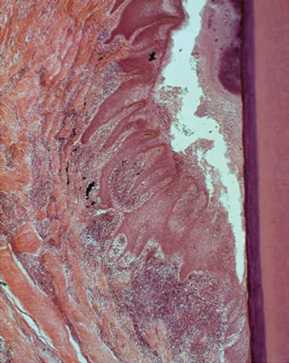

نسخه استخراجشده؛ ترجمه یا تأیید علمی انجام نشده است. وضعیت: captured
پیج و شرودر سیر بافتشناسی بیماری را در چهار مرحله توصیف کردند. این طبقهبندی بافتشناسی است نه بالینی؛ یعنی مراحل اول اغلب از نظر بالینی دیده نمیشوند.
واسکولیت عروق زیر اپیتلیوم اتصالی
مهاجرت نوتروفیلها به داخل شیار
افزایش جریان مایع شیار لثه
از دست رفتن کلاژن اطراف عروق
⚠️ از نظر بالینی قابل مشاهده نیست؛ لثه سالم به نظر میرسد.
سلول غالب: لنفوسیت T
از دست رفتن کلاژن تا حدود ۶۰ تا ۷۰ درصد در ناحیه ضایعه
تغییر شکل فیبروبلاستها
پرولیفراسیون اپیتلیوم اتصالی و سولکولار (شروع رته پگ)
⚠️ نخستین نشانه بالینی ظاهر میشود: خونریزی هنگام پروب.
سلول غالب: پلاسماسل

تشکیل اپیتلیوم پاکت (Pocket Epithelium) که زخمی و نفوذپذیر است
تخریب گستردهتر کلاژن
⚠️ مهمترین نکته: در این مرحله هنوز از دست رفتن چسبندگی و تحلیل استخوان رخ نداده است. یعنی این هنوز ژنژیویت است و برگشتپذیر.
مهاجرت آپیکالی اپیتلیوم اتصالی
از دست رفتن چسبندگی و تحلیل استخوان آلوئولار
تشکیل پاکت واقعی پریودنتال
⚠️ این مرحله پریودنتیت است و از دست رفتن چسبندگی برگشتناپذیر.
📌 مرز میان ضایعه مستقر و پیشرفته، دقیقاً همان مرز ژنژیویت و پریودنتیت است.
پاکت کاذب: عمق پروب زیاد است چون لثهی ملتهب ورم کرده و مارجین آن بالا آمده. چسبندگی سر جای خودش است و با فروکش کردن التهاب، عمق هم برمیگردد. این همان تصویر ضایعهی مستقر است.
پاکت واقعی: عمق پروب زیاد است چون اپیتلیوم اتصالی به سمت آپیکال مهاجرت کرده. چسبندگی از دست رفته و پاکت با کنترل التهاب هم باقی میماند. این تصویر ضایعهی پیشرفته است.
📌 پس عمق پروب (PD) بهتنهایی تشخیص نمیدهد؛ همیشه سطح چسبندگی بالینی (CAL) را هم بسنج. اگر CAL صفر باشد، هر قدر هم پاکت عمیق باشد، هنوز ژنژیویت است.
| مرحله | زمان | سلول غالب | وضعیت بالینی |
|---|---|---|---|
| اولیه | ۲ تا ۴ روز | نوتروفیل | بالینی نامشهود |
| زودرس | ۴ تا ۷ روز | لنفوسیت T | خونریزی هنگام پروب |
| مستقر | ۲ تا ۳ هفته | پلاسماسل | ژنژیویت آشکار؛ برگشتپذیر |
| پیشرفته | متغیر | پلاسماسل | پریودنتیت؛ از دست رفتن چسبندگی |
نشان میدهد تغییرات بافتی پیش از علائم بالینی شروع میشوند؛ لثهای که سالم به نظر میرسد میتواند ضایعه اولیه داشته باشد.
روشن میکند که تا مرحله مستقر، همهچیز برگشتپذیر است. این پنجره طلایی مداخله است.
مرز دقیق ژنژیویت و پریودنتیت را تعریف میکند: مهاجرت آپیکالی اپیتلیوم اتصالی.
⚠️ اشتباه رایج ۱: ضایعه مستقر هنوز ژنژیویت است و برگشتپذیر؛ نه پریودنتیت.
⚠️ اشتباه رایج ۲: توالی سلول غالب: نوتروفیل ← لنفوسیت T ← پلاسماسل.
نوع سؤال: ساخت کلمه · 7 خانه
حروف منبع: خ · ی · و · ن · ی · ز · ر